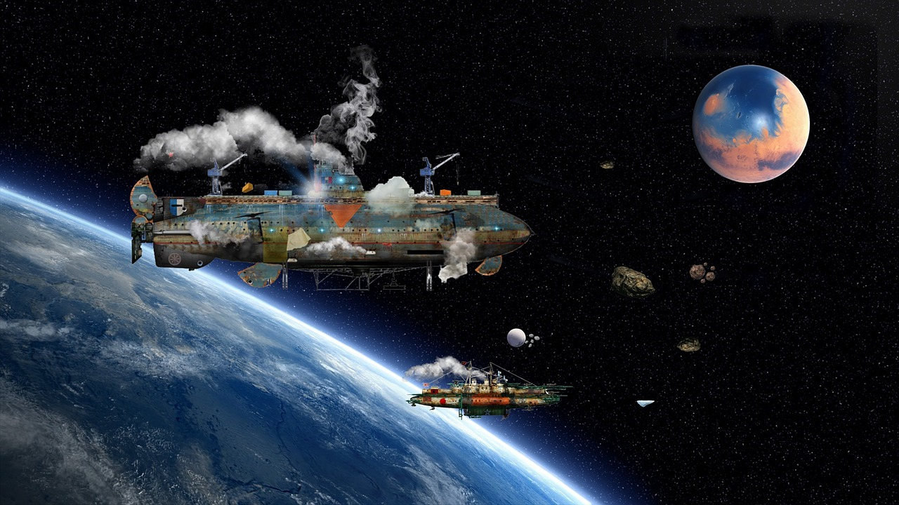

MOON TERRAFORMING
Many wouldn't think to look to the moon to terraform, but it might just be our best option. It's close, only taking a few days to get from earth to mars, and its tidal locked position gives us constant easy access to its infrastructures and vice versa. The earth would act as a shield protecting the moon from radiation belts. Plus, if we were to successfully terraform the moon, it would make our job of terraforming mars a lot easier since they are similar conditional-wise.
HOW TO TERRAFORM THE MOON

Essentially to terraform the moon, we would have to bring mini self-enclosed structures full of oxygen and bacteria fit to enrich the soil. Some scientists believe that we could melt trapped waters beneath the moon's craters. We would need to bring the necessary bio for life from earth to the moon.
Even if we were to the fail terraform the moon, we'd still benefit from the whole ordeal because of the rich materials that could be extracted from the moon which would in turn help us reach more advanced technologies.